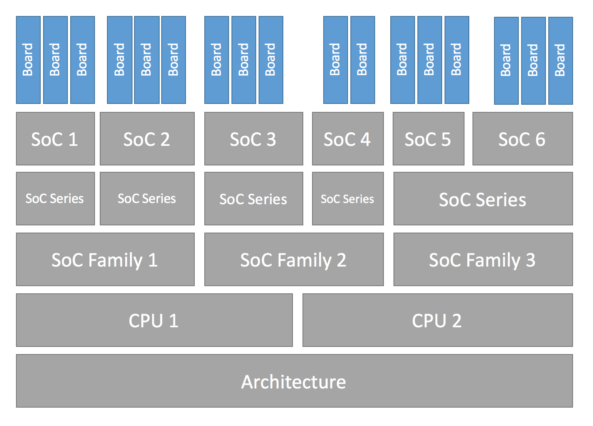
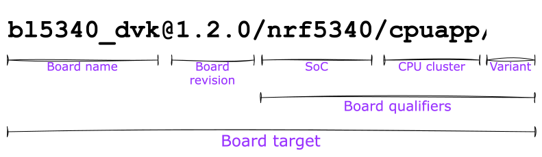

开发板移植指南
要为新的 开发板 添加 Zephyr 支持，至少需要一个包含各种文件的 开发板目录。开发板目录中的文件会继承对至少一个 SoC 及其所有特性的支持。因此，Zephyr 也必须支持你的 SoC。
过渡到当前硬件模型
Zephyr 3.6.0 发布后不久，Zephyr 引入了一种新的硬件模型。这一新模型彻底改变了 SoC 和开发板的命名与定义方式，并增加了对多年来被认为很重要的一些特性的支持，其中包括：
支持多核、多架构的 AMP（非对称多处理）SoC
支持多 SoC 开发板
支持在 Zephyr 构建系统之外复用 SoC 和开发板 Kconfig 树
支持 Sysbuild（系统构建） 的高级用例
清除了所有现存的随意且不一致的 Kconfig 和文件夹命名用法
本页的所有文档均针对当前硬件模型。有关之前已过时的硬件模型的信息，请参阅 Zephyr v3.6.0（或更早版本）中的文档。
有关新模型背后的设计理由、开发过程和概念的更多信息，请参阅 original issue、original Pull Request，完整的变更内容请参阅 hardware model v2 commit。
新硬件模型的部分非关键特性、增强和改进仍在开发中。完整列表请查看 hardware model v2 enhancements issue。
从之前的硬件模型过渡到当前硬件模型（通常称为“硬件模型 v2”）需要修改所有现有的开发板和 SoC 定义。项目决定不为之前的模型提供直接的向后兼容，因此从旧版 Zephyr 过渡到包含新模型的版本（v3.7.0 及以后）时，如果用户有树外开发板（或 SoC），则有两种选择：
将树外开发板转换为当前硬件模型（推荐）
从 Zephyr v3.6.0 中取出 SoC 定义，复制到你的下游仓库（确保构建系统能通过 Zephyr 模块 或
SOC_ROOT找到它）。这样，按照之前硬件模型定义的开发板就能继续工作
将开发板从之前的硬件模型转换到当前硬件模型时，建议先通读本页，详细了解该模型。然后可以参考 example-application conversion Pull Request，了解如何移植一个简单的开发板。此外，还提供了一个 conversion script，在许多情况下都能可靠工作（不过可能无法完全处理多核 SoC）。最后，hardware model v2 commit 包含了将所有现有开发板从旧模型转换为当前模型的完整改动，可作为完整的转换参考。
硬件支持层级
Zephyr 的硬件支持基于一系列层级化的抽象。首先，每个 开发板 有一个或多个 SoC。每个 SoC 可以选择归入一个 SoC 系列，而 SoC 系列又可以选择属于一个 SoC 家族。每个 SoC 有一个或多个 CPU 集群，每个集群包含一个或多个特定 架构 的 CPU 核心。
该层级结构可以用下图直观表示：


下面是本节所述层级结构的一些示例，每行一个 开发板 及其对应的层级条目。注意，SoC 系列 和 SoC 家族 这两个层级并不总是会用到。
CPU 核心 |
||||||
|---|---|---|---|---|---|---|
nrf52832 |
nRF52832 |
nRF52 |
Nordic nRF |
Arm Cortex-M4 |
ARMv7-M |
|
mk64f12 |
MK64F12 |
Kinetis K6x |
NXP Kinetis |
Arm Cortex-M4 |
ARMv7-M |
|
openisa_rv32m1/ri5cy |
RV32M1 |
（未使用） |
（未使用） |
RI5CY |
RISC-V RV32 |
|
nrf5340/cpuapp |
nRF5340 |
nRF53 |
Nordic nRF |
Arm Cortex-M33 |
ARMv8-M |
|
nrf5340/cpunet |
nRF5340 |
nRF53 |
Nordic nRF |
Arm Cortex-M33 |
ARMv8-M |
|
mimx8ml8/a53 |
i.MX8M Plus |
i.MX8M |
NXP i.MX |
Arm Cortex-A53 |
ARMv8-A |
|
mimx8ml8/m7 |
i.MX8M Plus |
i.MX8M |
NXP i.MX |
Arm Cortex-M7 |
ARMv7-M |
|
mimx8ml8/adsp |
i.MX8M Plus |
i.MX8M |
NXP i.MX |
Cadence HIFI4 |
Xtensa LX6 |
有关术语的更多细节见下一节。
开发板术语
上一节介绍了 Zephyr 对硬件支持进行分类和实现的层级方式。本节重点介绍硬件支持相关的术语，特别是在定义和使用开发板与 SoC 时用到的术语。
下图以 BL5340 DVK 开发板为例，展示了 Zephyr 中围绕开发板概念使用的全部术语。


该图展示了用于描述开发板的各种术语：
开发板名称：
bl5340_dvk可选的 开发板版本：
1.2.0开发板目标，唯一标识上述各项的组合，在使用 Zephyr 提供的工具时可用于指定构建所针对的硬件：
bl5340_dvk@1.2.0/nrf5340/cpuapp/ns
形式上也可以表示为 board name[@revision][/board qualifiers]，进一步展开为 board name[@revision][/SoC[/CPU cluster][/variant]]。
如果开发板只包含一个单核 SoC，则可以在开发板目标中省略 SoC。这意味着，如果开发板没有定义任何开发板限定符，则开发板名称就可以用作开发板目标。反之，如果开发板定义中包含开发板限定符，则可以省略 SoC，但需保留相应的正斜杠：//。
继续上面的例子，开发板 BL5340 DVK 是一块单 SoC 开发板，其 SoC 定义了两个 CPU 集群：cpuapp 和 cpunet。其中 cpuapp 集群还额外定义了一个非安全的开发板变体 ns。
开发板限定符 nrf5340/cpuapp/ns 可以理解为：
nrf5340：SoC，即 Nordic nRF5340 双核 SoCcpuapp：CPU 集群cpuapp，由单个 Cortex-M33 CPU 核心组成。无法从开发板限定符中得知 CPU 集群包含多少个核心。ns：一个变体，此处的ns是 Zephyr 中常见的变体名称，表示面向支持 Trusted Firmware-M (TF-M) 的开发板的非安全构建。
并非所有 SoC 都定义了 CPU 集群或变体。例如，Thingy:52 这样的简单开发板只包含一个 SoC，没有 CPU 集群，也没有变体。对于 thingy52，开发板目标 thingy52/nrf52832 可以理解为：
thingy52：开发板名称。nrf52832：开发板限定符，此处与 SoC 相同，即 Nordic nRF52832。
确认你的 SoC 已受支持
首先确认 Zephyr 是否支持你的 SoC。如果支持，就可以开始 创建开发板目录。如果不确定，可以尝试：
在 支持的开发板和扩展板 中查找看起来相关的名称，并阅读具体开发板的文档加以确认。
询问你的 SoC 厂商
如果你需要添加 SoC、CPU 集群甚至架构支持，那么本页并不适合你，不过这里给出一些一般性建议。
架构
见 架构移植指南。
CPU 核心
CPU 核心支持文件放在 arch 下的 core 子目录中，例如 arch/x86/core。
有关 Zephyr 支持的工具链（编译器、链接器等）的信息，请参阅 安装工具链。如果需要支持新的工具链，构建与配置系统 是了解构建系统的良好起点。如果你需要建议或希望合作开发工具链支持，请联系社区。
SoC
Zephyr 的 SoC 支持文件位于 soc 下特定于架构的子目录中，通常按 SoC 家族分组。
如果为一个在 Zephyr 中已有 SoC 支持的厂商添加新的 SoC 家族或系列，请尽量将公共功能提取到共享文件中，以避免重复。如果你的厂商尚无任何支持，可以在新目录 zephyr/soc/<VENDOR>/<YOUR-SOC> 中添加；请使用含义明确的目录名。
创建开发板目录
找到一块使用你的 SoC 的现有开发板后，通常可以先复制其开发板目录，再根据你的硬件修改其中的内容。
你需要为开发板取一个唯一的名称。运行 west boards 可以列出已被占用的名称，请另选一个新名称。假设你的开发板名为 plank（请不要真的使用这个名称）。
首先创建开发板目录 zephyr/boards/<VENDOR>/plank，其中 <VENDOR> 是你的厂商子目录。（开发板目录不一定要放在 zephyr 仓库中，但这是最简单的入门方式。开发板能正常工作后，如何将开发板目录移到单独的仓库，请参阅 自定义开发板、设备树和 SOC 定义。）
备注
如果要将开发板贡献给 Zephyr，则必须使用 <VENDOR> 子目录；但如果开发板放在本地仓库中，则 <your-repo>/boards 下可以使用任意目录结构。如果厂商已在 dts/bindings/vendor-prefixes.txt 列表中定义，则必须使用该厂商前缀作为 <VENDOR>。如果厂商未定义，可以使用 others 作为厂商前缀。
备注
开发板目录名不必与开发板名称一致，甚至可以在一个目录中定义多块开发板。
开发板目录应如下所示：
boards/<VENDOR>/plank
├── board.yml
├── board.cmake
├── CMakeLists.txt
├── doc
│ ├── plank.webp
│ └── index.rst
├── Kconfig.plank
├── Kconfig.defconfig
├── plank_<qualifiers>_defconfig
├── plank_<qualifiers>.dts
└── plank_<qualifiers>.yaml
当然，要把 plank 替换为你的开发板名称。
必需的文件有：
board.yml：描述开发板高层元数据的 YAML 文件，例如开发板名称、其 SoC 和变体。多核 SoC 的 CPU 集群不在此文件中描述，因为它们继承自 SoC 的 YAML 描述。plank_<qualifiers>.dts：以 设备树 格式编写的硬件描述。它声明你的 SoC、连接器以及其他硬件组件，例如 LED、按键、传感器或通信外设（USB、Bluetooth 控制器等）。Kconfig.plank：基础软件配置，用于选择 SoC 以及其他与开发板和 SoC 相关的设置。不得 select 开发板和 SoC 树之外的 Kconfig 设置。要选择通用的 Zephyr Kconfig 设置，必须使用Kconfig文件。
可选的文件有：
Kconfig、Kconfig.defconfig：配置系统（Kconfig） 格式的软件配置。它们为软件特性和外设驱动提供默认设置。plank_defconfig和plank_<qualifiers>_defconfig：Kconfig.conf格式的软件配置。board.cmake：用于 烧录和调试支持CMakeLists.txt：用于向构建中添加额外的源文件。doc/index.rst、doc/plank.webp：开发板的文档和图片。只有在 贡献你的开发板 到 Zephyr 时才需要它们。plank_<qualifiers>.yaml：包含 测试运行器（Twister） 所用各类元数据的 YAML 文件。
<soc>/<cpucluster>/<variant> 形式的开发板限定符在用于文件名时会被规范化，即把 / 替换为 _，例如 soc1/foo 用于文件名时变为 soc1_foo。
编写开发板 YAML
开发板 YAML 文件从高层描述开发板，包括 SoC、开发板变体和开发板版本。
详细配置（例如硬件描述和配置）在设备树和 Kconfig 中完成。
开发板 YAML 文件的骨架如下：
board:
name: <board-name>
full_name: <board-full-name>
vendor: <board-vendor>
revision:
format: <major.minor.patch|letter|number|custom>
default: <default-revision-value>
exact: <true|false>
revisions:
- name: <revA>
- name: <revB>
...
socs:
- name: <soc-1>
variants:
- name: <variant-1>
- name: <variant-2>
variants:
- name: <sub-variant-2-1>
...
- name: <soc-2>
...
开发板文件夹中可以存放多块开发板。如果多块开发板放在同一个开发板文件夹中，则 board.yml 文件必须以列表形式描述它们：
boards:
- name: <board-name-1>
vendor: <board-vendor>
full_name: <board-full-name>
...
- name: <board-name-2>
vendor: <board-vendor>
full_name: <board-full-name>
...
...
编写设备树
设备树文件 boards/<vendor>/plank/plank_<qualifiers>.dts 以设备树源（DTS）格式描述你的开发板硬件（同样，请把 plank 换成你的开发板名称）。如果你刚接触设备树，请参阅 设备树简介。
一般来说，plank_<qualifiers>.dts 应如下所示：
/dts-v1/;
#include <your_soc_vendor/your_soc.dtsi>
/ {
model = "A human readable name";
compatible = "yourcompany,plank";
chosen {
zephyr,console = &your_uart_console;
zephyr,sram = &your_memory_node;
/* other chosen settings for your hardware */
};
/*
* Your board-specific hardware: buttons, LEDs, sensors, etc.
*/
leds {
compatible = "gpio-leds";
led0: led_0 {
gpios = </* GPIO your LED is hooked up to */>;
label = "LED 0";
};
/* ... other LEDs ... */
};
buttons {
compatible = "gpio-keys";
/* ... your button definitions ... */
};
/* These aliases are provided for compatibility with samples */
aliases {
led0 = &led0; /* now you support the blinky sample! */
/* other aliases go here */
};
};
&some_peripheral_you_want_to_enable { /* like a GPIO or SPI controller */
status = "okay";
};
&another_peripheral_you_want {
status = "okay";
};
如果开发板只有一个 SoC，且没有任何开发板变体，则 dts 文件也可以命名为 <plank>.dts。但不建议这样做，因为一旦为该开发板添加了变体或其他 SoC，这个文件就会在没有任何提示的情况下不再被使用。
如果时间紧迫，简单的硬件通常可以通过复制粘贴再反复试错来获得支持。如果想了解细节，则需要阅读设备树文档的其余部分以及设备树规范。
示例：FRDM-K64F 和 Hexiwear K64
本节给出与编写开发板设备树相关的具体示例。
FRDM-K64F 和 Hexiwear K64 开发板的设备树分别定义在 frdm_k64fs.dts 和 hexiwear_k64.dts 中。这两块开发板都使用同一 Kinetis SoC 家族（K6X）的 NXP SoC。
K6X 的通用设备树定义保存在 nxp_k6x.dtsi 中，两块开发板的 .dts 文件都包含了它。nxp_k6x.dtsi 又包含了 armv7-m.dtsi，后者提供 Arm v7-M 核心的通用定义。
由于 nxp_k6x.dtsi 旨在适用于所有基于 K6X 的开发板，它通过 status 属性默认禁用了许多设备。例如，其中定义了如下 CAN 控制器（省略了不重要的部分）：
can0: can@40024000 {
...
status = "disabled";
...
};
由开发板 .dts 或应用程序覆盖文件根据需要设置 status = "okay" 来启用这些设备。开发板 .dts 文件还负责设备的所有开发板特定配置，例如为板载传感器、LED、按键等添加节点。
例如，FRDM-K64（而非 Hexiwear K64）的 .dts 启用了 CAN 控制器并设置了总线速率：
&can0 {
status = "okay";
};
&can0 { ... }; 语法用于在标签为 can0 的节点（即 .dtsi 文件中定义的 can@4002400 节点）上添加或覆盖属性。
开发板特定定制的其他示例包括：让 aliases 和 chosen 中的属性指向正确的节点（见 别名和 chosen 节点），以及进行 GPIO/引脚复用分配。
编写 Kconfig 文件
Zephyr 使用 Kconfig 语言配置软件特性。在为你的开发板编译 Zephyr 应用程序之前，开发板需要提供一些 Kconfig 设置。
设置 Kconfig 配置值的方法详见 设置 Kconfig 配置值。
对于名为 plank 的开发板，开发板目录中有一个必需的 Kconfig 文件，以及若干可选文件：
boards/<vendor>/plank
├── Kconfig
├── Kconfig.plank
├── Kconfig.defconfig
└── plank_<qualifiers>_defconfig
Kconfig.plank一个共享的 Kconfig 文件，可以同时被 Zephyr Kconfig 树和 sysbuild Kconfig 树引入（source）。
此文件在 Kconfig 树中选择 SoC，以及其他可能与 SoC 相关的 Kconfig 设置。此文件不得 select 可复用的 Kconfig 开发板树和 SoC 树之外的任何内容。
Kconfig.plank可能如下所示：config BOARD_PLANK select SOC_SOC1
Kconfig 符号
BOARD_board和BOARD_normalized_board_target由构建系统构造，因此上面的代码片段中不应定义类型。Kconfig由 boards/Kconfig 包含。
此文件可以添加当前开发板特有的 Kconfig 设置。
并非所有开发板都有
Kconfig文件。开发板特定的设置应当是自定义设置，并且通常带有提示文字，如下所示：
config BOARD_FEATURE bool "Board specific feature"
如果设置名称与 Zephyr 中已有的某个 Kconfig 设置相同，并且只修改该设置的默认值，则应改用
Kconfig.defconfig。Kconfig.defconfigKconfig 选项的开发板特定默认值。
并非所有开发板都有
Kconfig.defconfig文件。整个文件应放在一对
if BOARD_PLANK/endif行之间，如下所示：if BOARD_PLANK config FOO default y if NETWORKING config SOC_ETHERNET_DRIVER default y endif # NETWORKING endif # BOARD_PLANK
plank_<qualifiers>_defconfig（在少数情况下为plank_defconfig）一个 Kconfig 片段，每当为你的开发板编译应用程序时，都会原样合并到最终构建目录的
.config中。plank_defconfig只能用于没有限定符、没有变体且只有一个 SoC 的开发板。但不建议采用这种命名方式，因为一旦上游 Zephyr 为该开发板添加了新的 SoC 或开发板变体/限定符，示例/测试或下游用法就会在毫无警告的情况下突然失效。
备注
多个文件不会被合并，文件也没有回退机制。这意味着，如果一块开发板有 2 个不同的 SoC，每个 SoC 有 2 个开发板变体，那么 plank_defconfig 文件将完全不会被使用；对于第一个限定符和变体，将使用 plank_<soc1>_<variant1>_defconfig，且它不会包含其他文件。
_defconfig 应包含 UART、控制台等的必需设置。具体内容与架构相关，但通常类似如下：
CONFIG_GPIO=y
CONFIG_CONSOLE=y
CONFIG_UART_CONSOLE=y
CONFIG_SERIAL=y
plank_x_y_z_defconfig/plank_<qualifiers>_x_y_z_defconfig一个 Kconfig 片段，每当为开发板版本
x.y.z编译应用程序时，都会原样合并到最终构建目录的.config中。
构建、测试和修复
现在可以构建并测试你想在开发板上运行的应用程序了，直到结果令你满意为止。
例如：
west build -b plank samples/hello_world
west flash
要让 west flash 正常工作，请参阅下文 烧录和调试支持。你也可以使用自己喜欢的任何其他工具直接烧录 build/zephyr/zephyr.elf、zephyr.hex 或 zephyr.bin。
向上游提交开发板之前，请确认你添加的每个开发板目标都能仅使用主线 Zephyr 仓库及其模块中的代码，通过项目的最小开源测试套件。该套件目前包括：
samples/philosopherstests/kernel
例如，可以这样为某个开发板目标构建该套件：
west twister -p plank -T samples/philosophers -T tests/kernel
对于具有多个 SoC、CPU 集群、变体或版本的开发板，请对每个新的开发板目标重复运行该测试套件。还建议构建 Hello World，作为快速冒烟检查，例如：
west build -p always -b plank/soc1/foo samples/hello_world
west build -p always -b plank@1.0.0/soc1/foo samples/hello_world
如果开发板目标需要，请使用 Sysbuild（系统构建）。如果使用了开发板测试元数据（例如开发板目标 YAML 文件中的 testing: only_tags），请确保该目标在本地测试或 CI 中仍会针对最小测试套件进行验证。
一般建议
为了保持一致，并让用户更容易构建与开发板无关的应用程序，移植打算贡献给 Zephyr 的开发板时，请遵循以下准则：
- 在设备树中启用有价值的组件
有价值的板载组件（LED、按键、传感器、板载 USB/以太网/BLE/Wi-Fi 等）的设备树节点必须 默认启用，并具有正确的引脚控制和驱动配置，从而开箱即用。
- 默认保持子系统禁用（Kconfig）
除非某个子系统是开发板基本运行所严格必需的，或在这些建议中被明确列为例外，否则不要在开发板 defconfig 中启用它。
- 配置系统时钟和节拍源
设置可正常工作的系统时钟和节拍源。
- 提供默认控制台
使用
zephyr,consolechosen 节点指向用于控制台输出的 UART 控制器。带有内置调试器或 USB 转 UART 适配器的开发板，应将控制台设置为连接到该适配器的 UART 控制器。
没有任何调试适配器、只有 USB 的开发板，必须包含通用的 USB CDC-ACM Kconfig 和 DTS 片段，以启用 CDC-ACM UART 作为日志和 Shell 的默认后端。
- 添加 扩展板接口 定义
对于引出标准扩展排针的开发板，请添加连接器节点和引脚复用配置。只启用预期/标准连接器功能所需的外设。
- 配置引脚和外设实例
将外设映射到正确的引脚（例如将 SPI 映射到 Arduino SPI 引脚），并提供支持开发板特性的默认引脚复用条目。
- 启用网络接口
如果存在网络硬件，请为每种受支持的技术配置默认接口，使网络示例开箱即用。
- 启用 GPIO 控制器
所有连接到板载组件或扩展排针的 GPIO 端口都应启用。
- 启用 MPU 和栈保护
建议在可用时启用 MPU（除非内存资源过于有限）。启用 MPU 后，建议同时启用硬件栈保护（
CONFIG_HW_STACK_PROTECTION），让内核能够检测栈溢出，便于调试。
烧录和调试支持
Zephyr 通过 west 扩展命令支持 构建、烧录和调试。
要为开发板添加 west flash 和 west debug 支持，需要在开发板目录中创建 board.cmake 文件。此文件的作用是为开发板配置一个“运行器（runner）”。（要让开发板支持 west build，无需做任何特殊处理。）
“运行器”是 Zephyr 特有的 Python 类，它封装了 烧录和调试主机工具，并与 west 和 Zephyr 构建系统集成，以支持 west flash 及相关命令。每个运行器支持烧录、调试或两者兼有。你需要在 board.cmake 中配置这些 Python 脚本的参数以支持这些命令，例如下面这个 board.cmake 示例：
board_runner_args(jlink "--device=nrf52" "--speed=4000")
board_runner_args(pyocd "--target=nrf52" "--frequency=4000000")
include(${ZEPHYR_BASE}/boards/common/nrfutil.board.cmake)
include(${ZEPHYR_BASE}/boards/common/nrfjprog.board.cmake)
include(${ZEPHYR_BASE}/boards/common/jlink.board.cmake)
include(${ZEPHYR_BASE}/boards/common/pyocd.board.cmake)
此示例配置了 nrfutil、nrfjprog、jlink 和 pyocd 运行器。
警告
运行器的名称通常与其封装的工具一致，例如 jlink 运行器封装的是 Segger 的 J-Link 工具，以此类推。但 --speed 等运行器命令行选项是这些 Python 脚本特有的。
备注
如果工具支持多种操作系统，创建运行器和开发板配置时就不应只针对某一种操作系统，也不应依赖特殊的系统设置/配置。例如：不要假定用户已有相关知识/配置，或（在使用 Linux 时）安装了特殊的 udev 规则；不要假定所有平台都使用某个特定的 /dev/X 设备，因为这与 Windows 或 macOS 不兼容；并且应允许覆盖所选设备，以便在一个系统上连接多块开发板，由用户选择对哪一块进行烧录/调试。
更多详细信息：
运行
west flash --context可查看支持烧录的可用运行器列表，运行west flash --context -r <RUNNER>可查看某个运行器可用的具体选项。对于支持调试的运行器，运行
west debug --context和west debug --context <RUNNER>可获得相同的输出。运行
west flash --help和west debug --help可查看烧录和调试的顶层选项。Python API 见 配置选项。
可参考与你的开发板类似的其他开发板的
board.cmake文件，获取更多示例。
要查看 west flash 或 west debug 命令具体做了什么，请以详细模式运行它：
west --verbose flash
west --verbose debug
详细模式会打印运行器所使用的所有主机工具命令。
board.cmake 中 include() 调用的顺序很重要。如果尚未设置默认运行器，第一个 include 会设置它。例如，先包含 nrfjprog.board.cmake 意味着 nrfjprog 是该开发板的默认烧录运行器。由于 nrfjprog 不支持调试，jlink 就成为默认调试运行器。
多个开发板版本
从用户角度介绍此功能的基础知识，请参阅 为开发板版本构建。
开发板版本在 board.yml 的 revision 条目中描述。
board:
revision:
format: <major.minor.patch|letter|number|custom>
default: <default-revision-value>
exact: <true|false>
revisions:
- name: <revA>
- name: <revB>
Zephyr 原生支持以下版本格式：
major.minor.patch：匹配三段数字的版本，例如1.2.3。number：匹配整数版本letter：仅匹配A到Z的单个字母版本
模糊版本匹配
模糊版本匹配默认启用。
如果用户选择的版本介于可用版本之间，则使用不大于用户所选版本的最接近版本号。例如，如果开发板 plank 定义了版本 0.5.0 和 1.5.0，而用户为 plank@0.7.0 构建，构建系统将以版本 0.5.0 为目标。
构建系统会在 CMake 配置时打印如下信息：
-- Board: plank, Revision: 0.7.0 (Active: 0.5.0)
这样，你只需为引入了不兼容改动的开发板版本号创建版本配置文件。
letter 版本格式与此类似：如果定义了版本 A、D 和 F，而用户为 plank@E 构建，构建系统将以版本 D 为目标。
精确版本匹配
在 board.yml 的 revision 部分中指定 exact: true 时，启用精确版本匹配。
定义了 exact 后，在上例中为 plank@0.7.0 构建会产生如下错误信息：
Board revision `0.7.0` not found. Please specify a valid board revision.
开发板版本配置调整
当用户为开发板 plank@<revision> 构建时，可以对开发板的常规配置进行调整。
如 编写设备树 和 编写 Kconfig 文件 两节所述，开发板默认配置由 <board>.dts / <board>_<qualifiers>.dts 和 <board>_defconfig / <board>_<qualifiers>_defconfig 文件生成。为特定开发板版本构建时，以上述文件为起点，并额外使用以下开发板文件：
<board>_<qualifiers>_<revision>_defconfig：特定版本的 defconfig，只用于由<board>_<qualifiers>标识的开发板及 SOC / 变体。<board>_<qualifiers>_<revision>.overlay：特定版本的 dts 覆盖文件，只用于由<board>_<qualifiers>标识的开发板及 SOC / 变体。
这种划分方式使具有多个 SoC、多核 SoC 或多个变体的开发板，可以把适用于所有 SoC 和变体的通用版本调整放在单个文件中，同时仍能将 SoC 或变体特定的调整放在专门的版本文件中。
以前面几节中的 plank 开发板为例，可以有如下版本调整：
boards/zephyr/plank
├── plank_soc1_foo_1_5_0.overlay # DTS overlay for plank board when building for soc1 variant foo on revision 1.5.0
└── plank_soc1_foo_1_5_0_defconfig # Kconfig adjustment for plank board when building for soc1 variant foo on revision 1.5.0
自定义 revision.cmake 文件
某些开发板可能使用 Zephyr 不原生支持的开发板版本，例如字符串版本。
Zephyr 不支持字符串修订版本的原因之一是，字符串可以有多种形式，而且并不总是能清楚地判断给定的字符串只是普通字符串（例如 blue、green、red 等），还是表示一种可以与更高或更低修订版本进行比较的顺序（例如 alpha、beta`, gamma）。
由于字符串的可能性实在太多（包括在内部进行正则匹配的可能性），字符串版本必须使用 custom 版本类型来实现。
要告知构建系统使用的是 custom 版本，board.yml 中 revision 部分的 format 字段必须写成：
board:
revision:
format: custom
使用自定义版本时，必须在开发板目录中创建 revision.cmake。
为该开发板构建时，构建系统会包含 revision.cmake，由该文件负责验证用户指定的版本。
BOARD_REVISION 变量保存用户指定的版本值。
如果要告知构建系统使用与用户指定版本不同的版本，revision.cmake 可以将 CMake 变量 ACTIVE_BOARD_REVISION 设置为实际要使用的版本。相应的 Kconfig 文件和设备树覆盖文件必须命名为 <board>_<ACTIVE_BOARD_REVISION>_defconfig 和 <board>_<ACTIVE_BOARD_REVISION>.overlay。
贡献你的开发板
如果你想把开发板贡献给 Zephyr，首先，感谢你！
你还需要完成一些额外的工作：
确保已遵循所有 一般建议。它们是 Zephyr 收录开发板的必要条件。
使用模板文件 doc/templates/board.tmpl 为开发板添加文档。提交 PR（拉取请求）之前如何构建文档，请参阅 文档生成。
按照 贡献指南 准备一个添加你的开发板的 PR（拉取请求）。
开发板扩展
Zephyr 的开发板硬件模型允许你用新的开发板变体扩展现有开发板。这类开发板扩展可以在你的自定义仓库中完成，因此可以位于 Zephyr 仓库之外。
用额外的变体扩展现有开发板，可以让你在调整现有开发板的同时，在构建时选择是为未经修改的现有开发板构建，还是为新变体构建。
要扩展现有开发板，首先在扩展开发板中创建 board.yml。请确保使用 创建开发板目录 中所述的目录结构。
用于扩展开发板的开发板 YAML 文件骨架如下：
board:
extend: <existing-board-name>
variants:
- name: <new-variant>
qualifier: <existing-qualifier>
扩展开发板时，开发板目录应如下所示：
boards/<VENDOR>/plank
├── board.yml
├── plank_<new-qualifiers>_defconfig
└── plank_<new-qualifiers>.dts
将 plank 替换为你所扩展的开发板的真实名称。
某些情况下，你可能还想调整其他设置，例如 Kconfig.defconfig 或 Kconfig.board。因此，扩展开发板时还可以额外提供以下文件。
boards/<VENDOR>/plank
├── board.cmake
├── Kconfig
├── Kconfig.plank
├── Kconfig.defconfig
└── plank_<new-qualifiers>.yaml